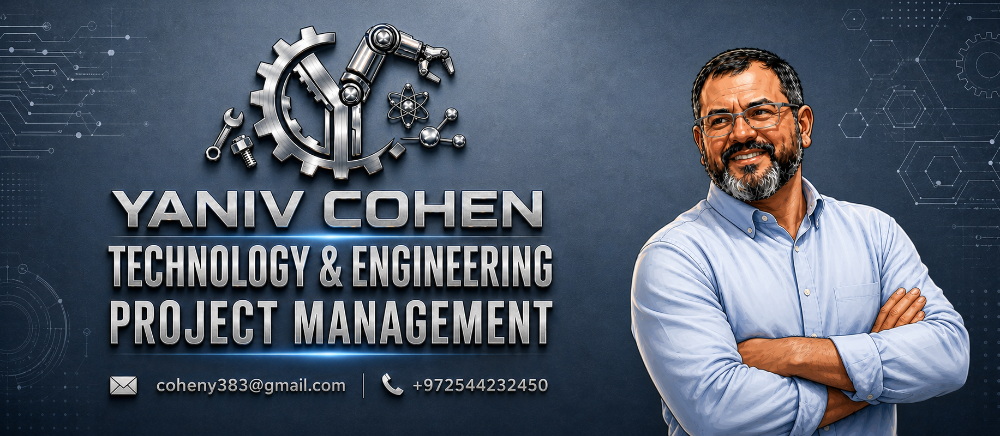

⚙
Plant & Line Establishment
Engineering consultancy, functional planning and turnkey establishment of manufacturing facilities from characterization to full commissioning.
End-to-end engineering leadership for manufacturing infrastructures, automation, robotics, NPI scale-up and complex global project delivery.

A focused service portfolio for companies that need practical engineering execution, not only consultancy documents.
Engineering consultancy, functional planning and turnkey establishment of manufacturing facilities from characterization to full commissioning.
Modernizing legacy production lines and integrating advanced robotic systems to increase throughput, precision and OEE.
Guiding new products from R&D prototypes to mass production while optimizing manufacturing processes and cost efficiency.
Diagnostic and corrective engineering solutions for production bottlenecks, quality, DFM and operational challenges.
Global sourcing of high-end equipment and representation of international technology providers for tailored infrastructure solutions.
Practical integration of advanced production technologies, robotics and automation to support scalable business growth.
Yaniv Cohen is an engineering leader with more than 22 years of global experience and a B.Sc. in Mechanical Engineering from Ben-Gurion University.
His expertise includes advanced production processes such as machining, forging and thermal treatments, Greenfield projects across Germany and Israel, operational excellence and high-ROI infrastructure solutions.
Contact YC Technological Solutions for an initial discussion.